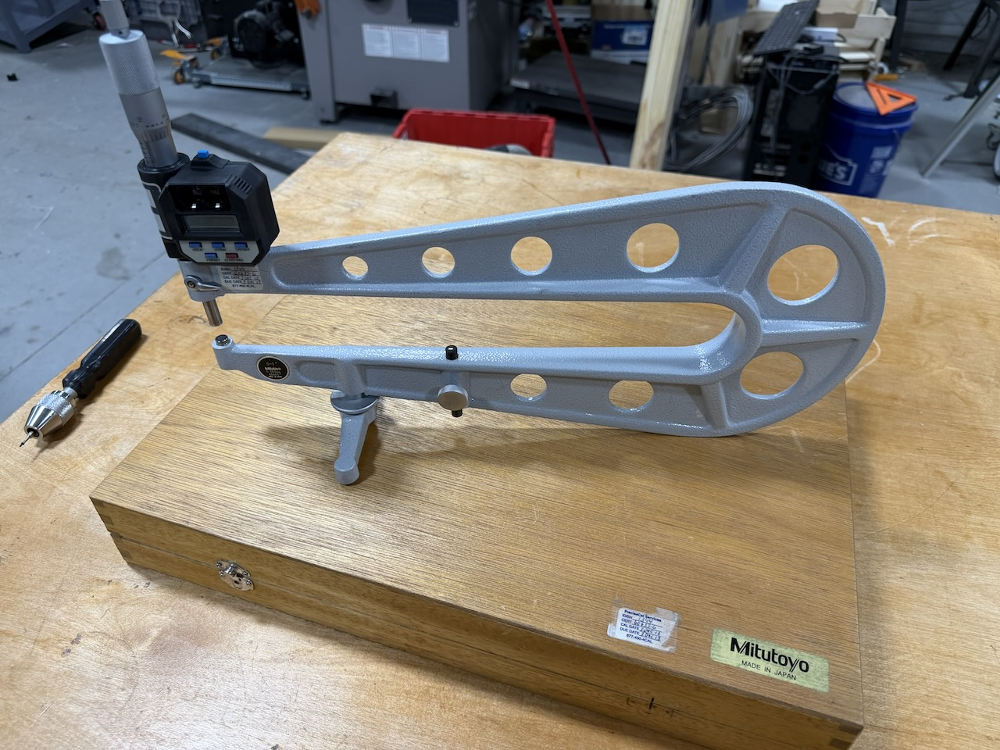
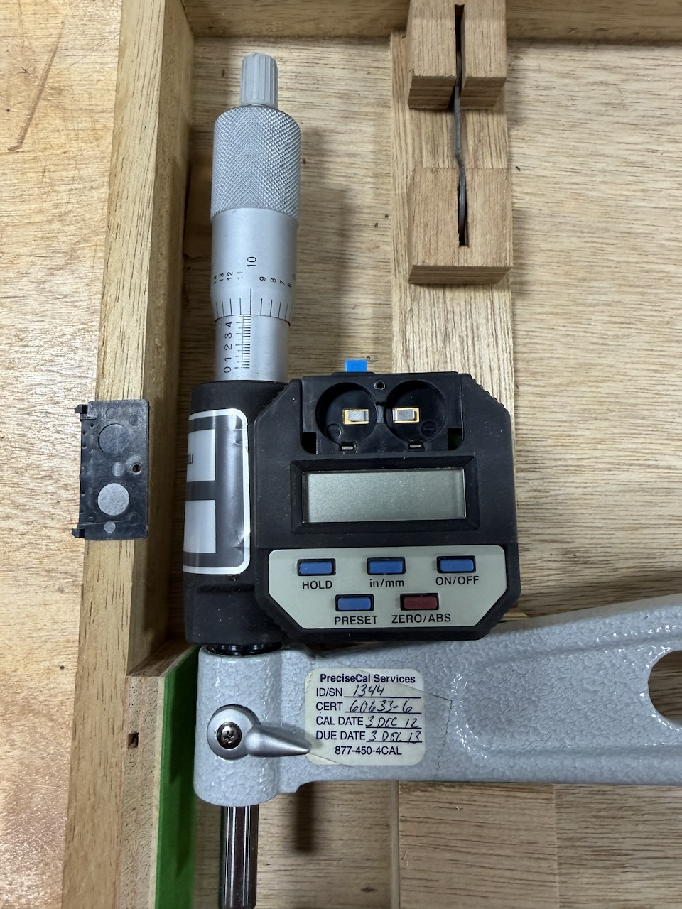
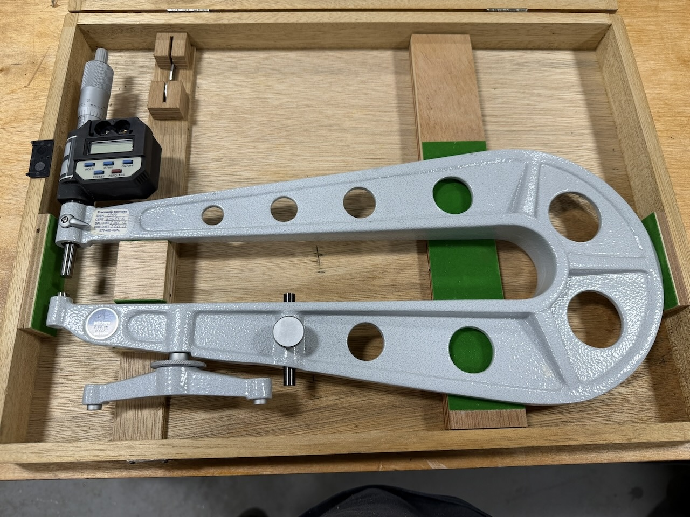
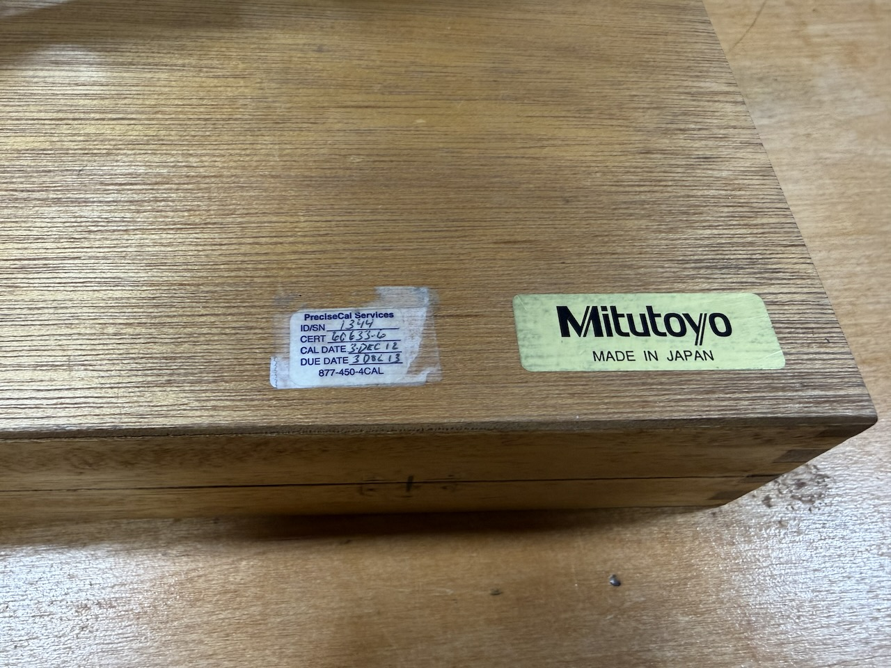
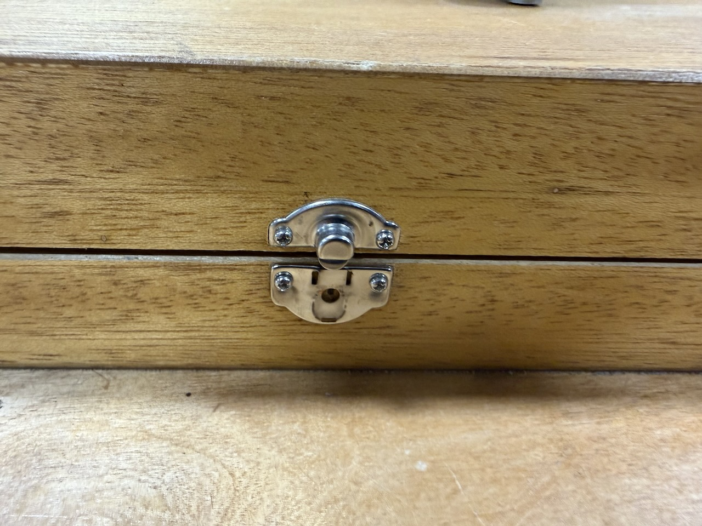
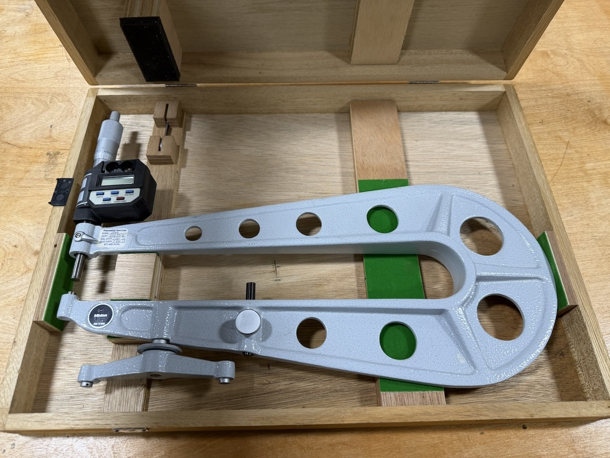

Mitutoyo 389-514 Series 389 Sheet Metal Digital Micrometer — Excellent Condition, Minor Cosmetic Issues






Up for sale is a Mitutoyo 389-514 Series 389 Sheet Metal Digital Micrometer in excellent working condition. The instrument itself is in great shape — fully functional, accurate, and ready to measure. There are two minor cosmetic issues with the case hardware that are disclosed in full below; neither affects the instrument or its operation in any way. If you want a capable Series 389 at a strong value and don’t need a showroom-condition case, this is it.
| Manufacturer | Mitutoyo |
| Model | 389-514 |
| Series | 389 — Sheet Metal Micrometers |
| Measurement range | 0–25 mm |
| Resolution | 0.001 mm |
| Accuracy | ±5 μm |
| Protection rating | IP65 (water and dust resistant) |
| Measuring faces | Carbide-tipped |
| Measuring force control | Ratchet stop |
| Functions | Zero-set, origin-set, data output, data hold |
| Display | Digital LCD |
- ✓ Mitutoyo 389-514 digital sheet metal micrometer — fully functional
- ✓ Original Mitutoyo wooden carrying case — present, holds closed (latches missing, see condition notes)
- ✓ Calibration documentation — PreciseCal Services, December 3, 2012
Excellent — the instrument itself is in great shape with no functional issues. Two minor cosmetic deficiencies are present and fully disclosed:
- Missing: battery lid retaining screw. The small screw that retains the battery compartment lid is absent. The lid seats and closes correctly — this is cosmetic only and does not affect operation.
- Missing: case latches. The original latches on the wooden carrying case are absent. The case holds closed under its own weight and protects the instrument, but does not latch or lock.
- Instrument body, thimble, and frame are in excellent condition with no visible wear
- Carbide measuring faces in excellent condition — no pitting, scoring, or wear
- Digital readout, zero-set, origin-set, data hold, and data output all function correctly
- Ratchet stop operates smoothly with consistent feel
- IP65 seals intact — no evidence of moisture ingress
Asking $475 — reasonable offers considered. Happy to answer technical questions, provide additional photos of the cosmetic issues, or share the calibration documentation before you commit.
Contact Seller